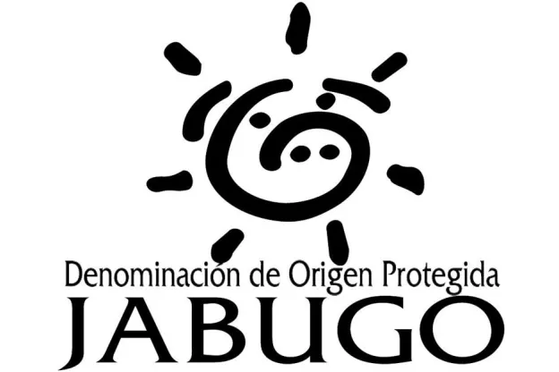

Denominación de Origen Jabugo

La zona para la cria de estos cerdos se ubica entre las dehesas de
Badajoz y Cáceres en Extremadura y de Cádiz, Córdoba, Huelva, Málaga y
Sevilla en Andalucía.
Su ubucación se muestra en el mapa a continuación.